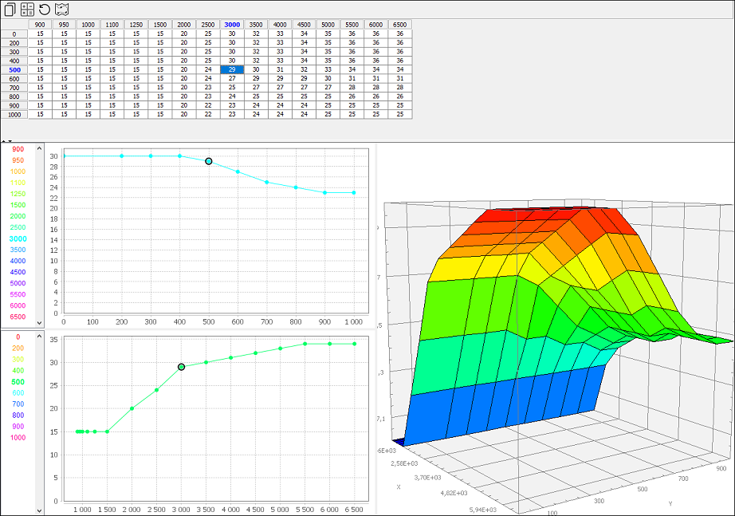

Une variable peut être modifié soit directement dans le tableau, soit graphiquement en sélectionnant le point voulu puis en le faisant glisser.
Il est possible de réaliser des opérations simples sur une ou plusieurs valeurs sélectionnées en tapant :